이 프로젝트에서 학생은 그래픽 디자이너(graphic designer)가 된 상황을 가정한다. 인기 있는 축제를 위한 홍보용 굿즈(promotional merchandise)를 만들어 달라는 의뢰를 받았다는 설정이다. 만들 것은 포스터, 배지, 로고, 티셔츠, 손목밴드 같은 것들이고, 축제 주제는 음악·게임·영화·음식과 음료 중에서 고르면 된다.
first는 조사와 무드보드(moodboard)다. 어떤 축제인지, 어떤 행사와 공연이 있는지, 무엇을 팔지, 색 조합(colour scheme)은 무엇인지, 어떤 손님이 올지를 먼저 정한다. 그 답을 그림과 글로 한 판에 모아 붙인 것이 무드보드이고, 축제의 전체 분위기가 한눈에 느껴져야 한다. 여기서 타깃 고객(target audience)을 정하는 것이 핵심이다.
다음은 포스터와 로고다. 포스터에는 주제가 드러나는 로고, 축제 이름, 보기 좋은 꾸밈, 무엇을 즐길 수 있는지에 대한 정보와 사진, 티켓 구하는 방법이 반드시 들어가야 한다. 그리고 Canva 기본 템플릿을 그대로 쓰면 안 된다고 자료에 분명히 적혀 있다. 시간·장소, 후원사, 특별 행사, 경품 추첨 같은 것을 더 넣어도 좋다.
티켓에는 브랜드가 눈에 보이게 드러나야 하고 바코드/QR, 가격, 티켓 등급(ticket tier), 장소, 날짜와 시간, 축제 이름과 로고가 들어가야 한다. 티켓 등급은 일반 입장(General Admission), VIP, 1일권·3일권처럼 어떤 권한이 있는지를 밝히는 것이다. 위조를 막는 홀로그램·워터마크 같은 보안 요소(security features)도 티켓에 왜 필요한지 생각해 보라고 한다. 굿즈(배지 등) 디자인에는 제품 스케치, 로고와 브랜드 이름, 색 조합, 글자체(typography)가 모두 들어가야 한다.
제출물은 총 5쪽이다. 1쪽 제목 페이지(이름·반·선생님 이름), 2쪽 무드보드, 3쪽 포스터, 4쪽 티켓, 5쪽 배지 디자인이고, 포스터부터는 ACCESSFM 설명(annotation)을 같이 붙여야 한다. 평가는 Foundation - Developing - Secure - Excellence 단계로 나뉘며, 모든 쪽을 채우고 주제가 일관되게 이어질수록 높은 단계다.
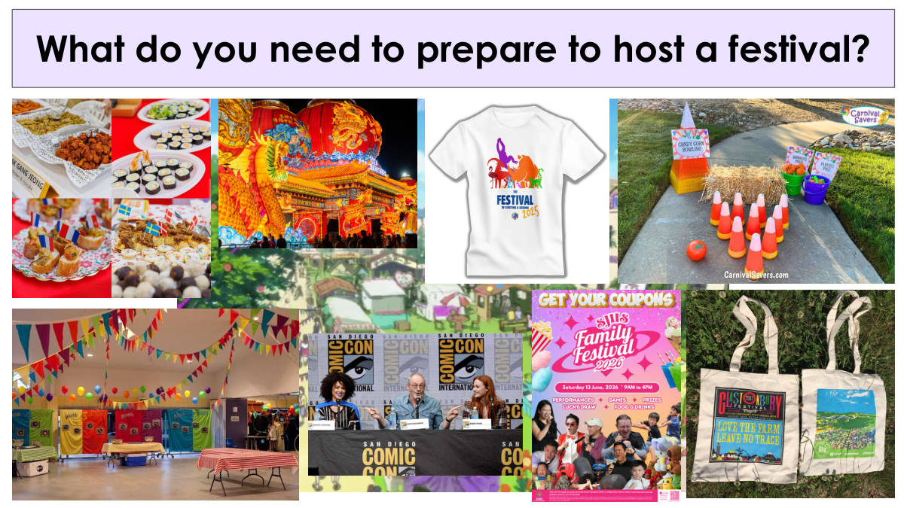
이 단원은 축제를 여는 데 필요한 준비물을 생각해 보는 질문으로 시작한다.
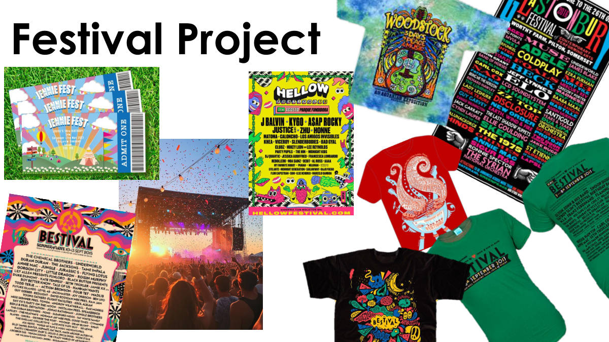
이 쪽은 과제의 제목만 적힌 표지다.
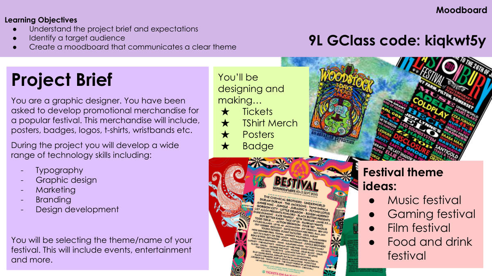
이 프로젝트는 축제의 홍보 상품을 만드는 것이고, 실제로 만들어 낼 결과물은 티켓·티셔츠·포스터·배지 네 가지다.
먼저 축제의 주제와 이름을 스스로 정하고, 목표 고객층을 정한 뒤 그 주제를 보여주는 무드보드를 만드는 것이 이 쪽의 학습 목표다.
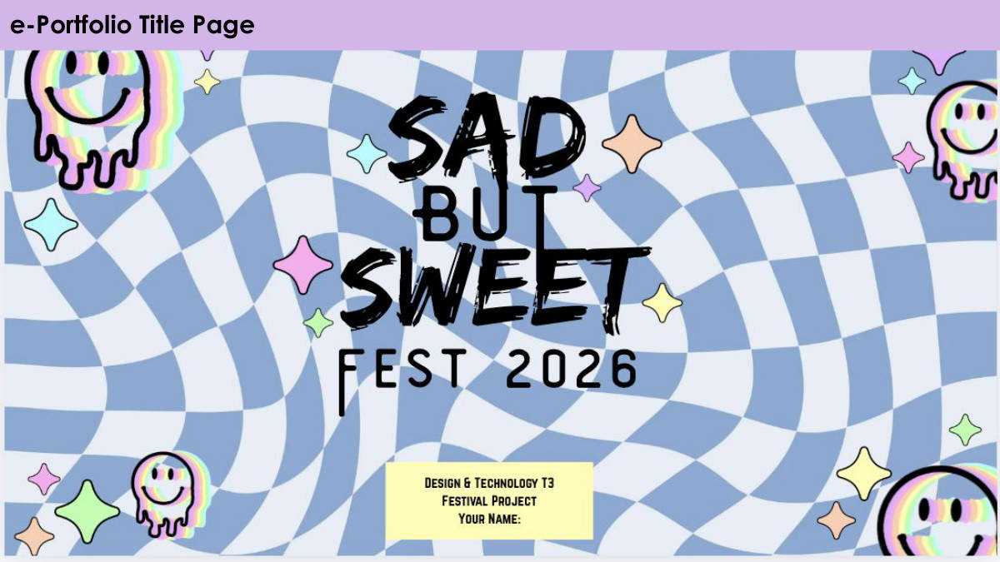
이 쪽은 과제물의 표지 쪽이다
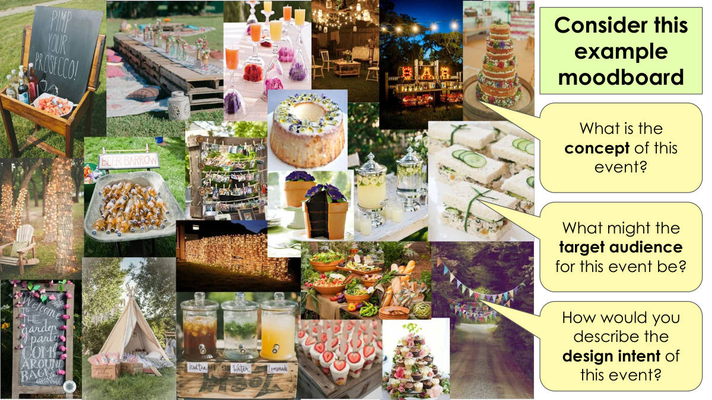
무드보드 예시 하나를 놓고 콘셉트·타깃 관객·디자인 의도 세 가지를 읽어내는 연습이다
무드보드는 이미지만 모은 것이 아니라 행사의 방향을 남에게 설명할 수 있어야 한다
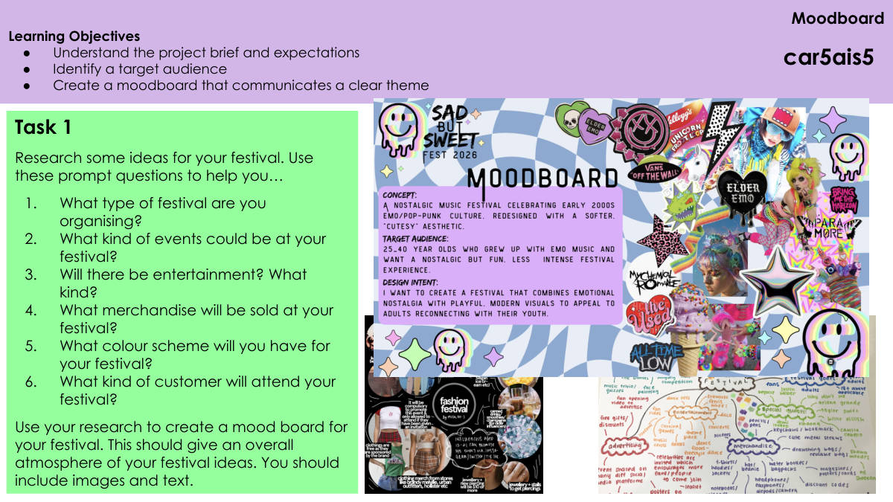
축제 아이디어를 정할 때 종류·행사·공연·상품·색 구성·손님 여섯 가지 질문에 답해야 한다.
무드보드에는 이미지와 글을 함께 넣어 축제의 전체 분위기와 뚜렷한 주제가 드러나게 한다.
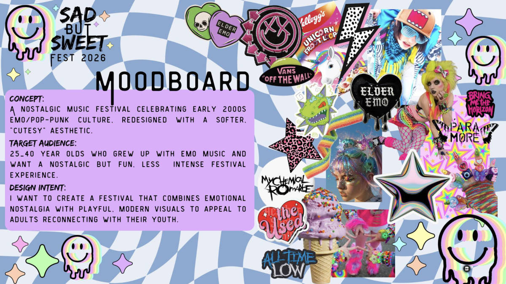
이 쪽은 T1 Festival Project 자료의 7번째 쪽이며, 읽을 글이 없으므로 앞뒤 쪽 내용으로 이어서 공부한다.
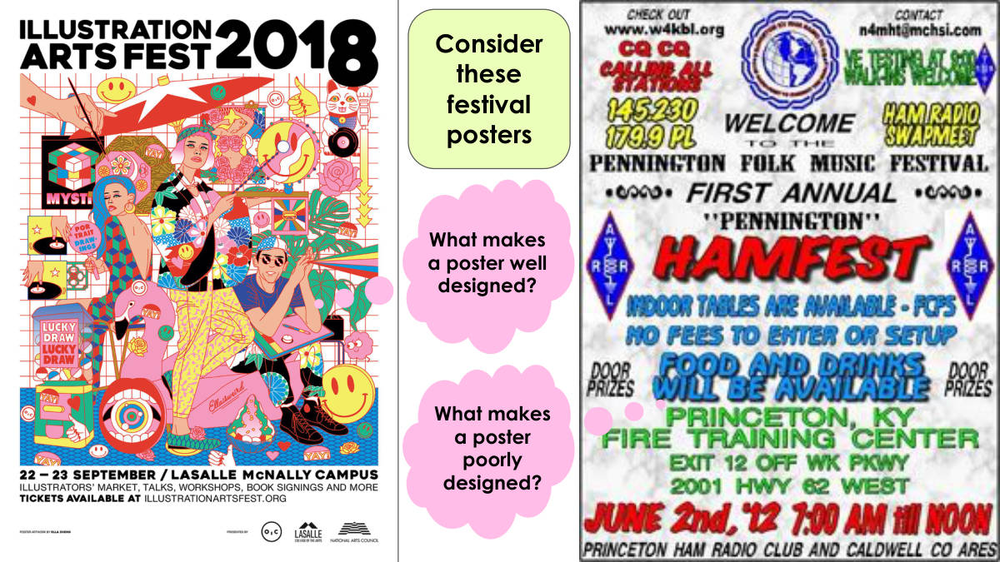
포스터 예시를 보며 좋은 디자인과 나쁜 디자인의 기준을 찾아보는 쪽이다
What makes ~?는 '무엇이 ~을 만드는가', 즉 '왜 그런가'를 묻는 표현이다
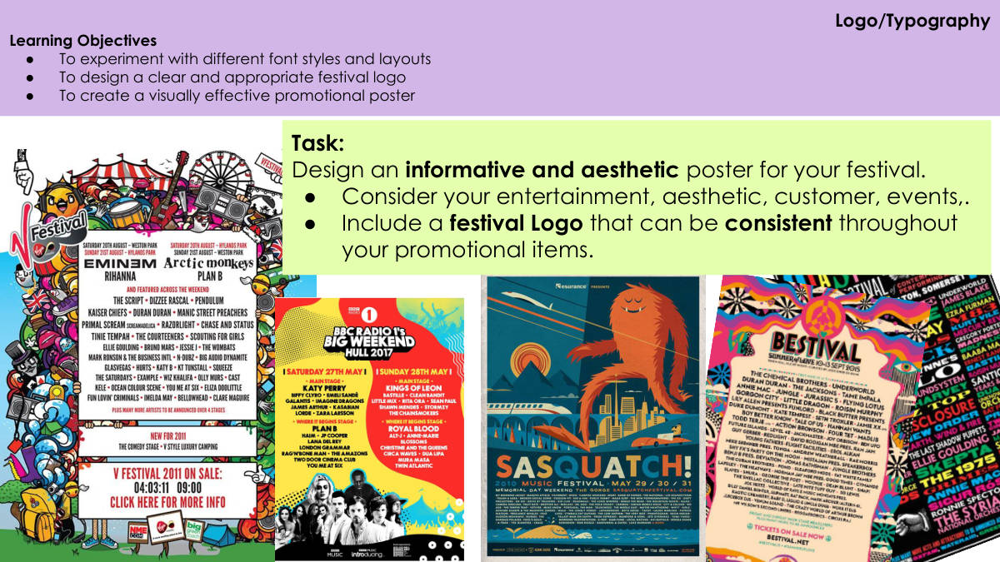
글꼴과 배치를 여러 가지로 시도해 보고, 정보와 디자인을 모두 갖춘 포스터를 만드는 것이 이 쪽의 과제다.
로고는 한 번 정하면 모든 홍보물에 똑같이 쓰여야 하므로 일관성이 핵심이다.
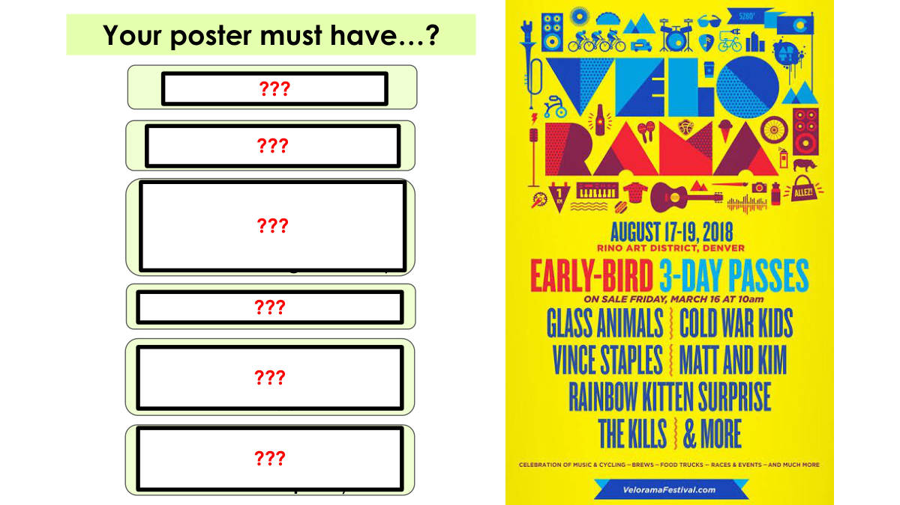
포스터 필수 항목 6가지 — 로고, 제목, 장식, 축제 정보와 사진, 티켓 구하는 법, 독창적 디자인이다.
캔바 기본 템플릿을 그대로 쓰면 안 되고 자기만의 디자인을 넣어야 한다.
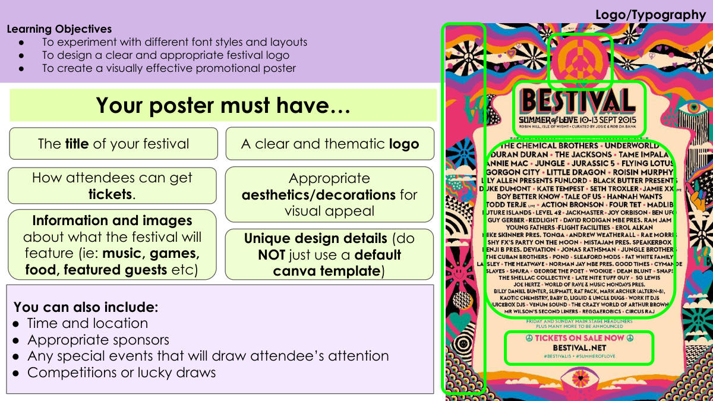
포스터 필수 항목은 다섯 가지다 — 로고, 축제 제목, 장식, 축제 내용 정보와 이미지, 티켓 구하는 방법이다.
캔바 기본 템플릿을 그대로 쓰면 안 되고, 자기만의 독창적인 디자인을 넣어야 한다. 시간·장소, 후원사, 특별 행사, 대회나 추첨은 선택 사항이다.
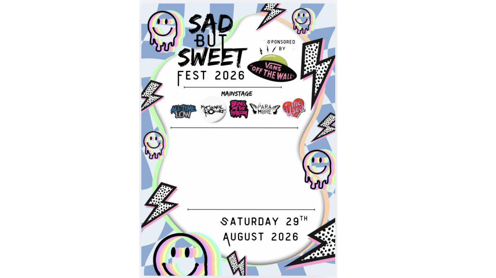
이 쪽에는 읽을 글이 없어 앞뒤 쪽으로 내용을 이어 봐야 한다
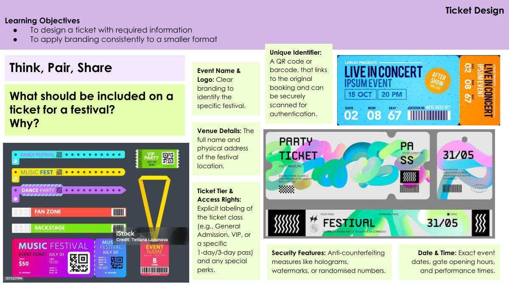
티켓에 꼭 들어갈 여섯 가지는 행사 이름과 로고, 날짜와 시간, 장소 정보, 티켓 등급과 입장 권한, 고유 식별자(QR·바코드), 보안 요소다.
티켓은 포스터보다 작은 형식이지만 같은 브랜딩을 일관되게 적용해야 한다.
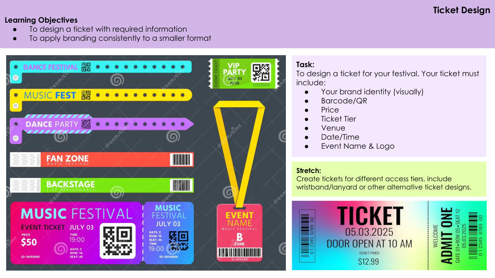
티켓에 반드시 들어가야 할 7가지는 브랜드 정체성, 바코드/QR, 가격, 티켓 등급, 공연장, 날짜/시간, 행사 이름과 로고다.
티켓처럼 작은 형식에서도 브랜딩을 일관되게 유지하는 것이 이 쪽의 핵심 목표다.
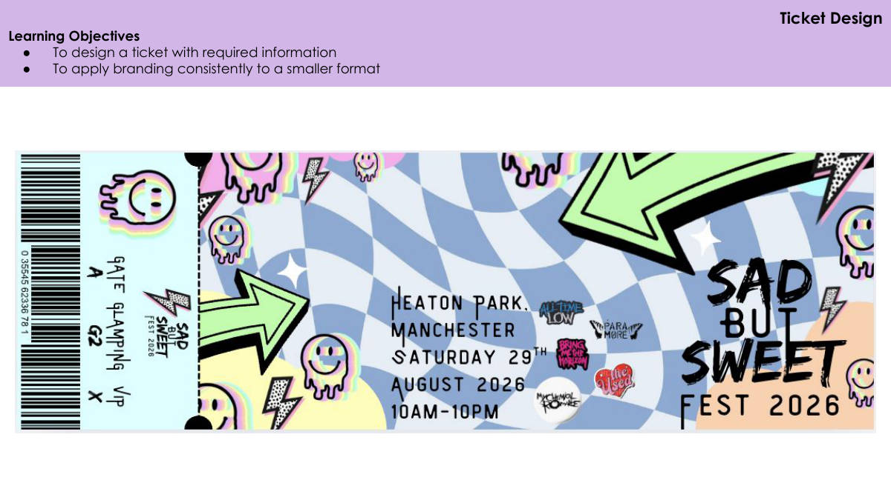
티켓에는 꼭 들어가야 할 정보가 있고, 그것을 빠짐없이 넣어 디자인하는 것이 목표다.
포스터보다 작은 티켓에도 같은 브랜딩을 일관되게 적용해야 한다.
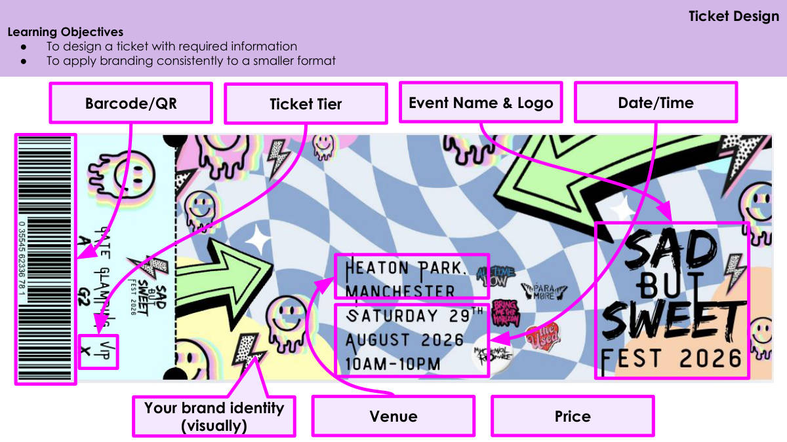
티켓에는 행사 이름과 로고, 날짜·시간, 장소, 티켓 등급, 가격, 바코드/QR을 넣어야 한다
포스터보다 작은 티켓에도 같은 브랜드 정체성을 일관되게 적용해야 한다
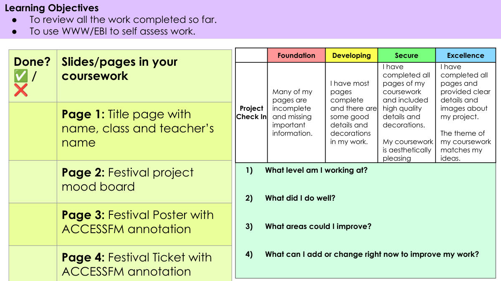
과제물은 표지·무드보드·포스터·티켓 네 쪽으로 이뤄지며, 포스터와 티켓에는 ACCESSFM 설명이 붙어야 한다
평가 단계는 기초→발전→안정→우수 네 단계이고, 위로 갈수록 '모든 쪽 완성 + 수준 높은 세부 표현 + 주제 일치'가 요구된다
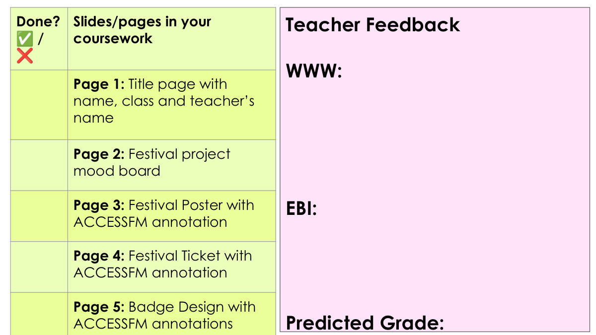
과제는 모두 5쪽이며, 제목 쪽을 뺀 포스터·티켓·배지 3쪽에는 반드시 ACCESSFM 설명을 붙여야 한다.
선생님이 WWW(잘한 점)·EBI(개선점)·예상 등급 세 가지로 평가해 준다.
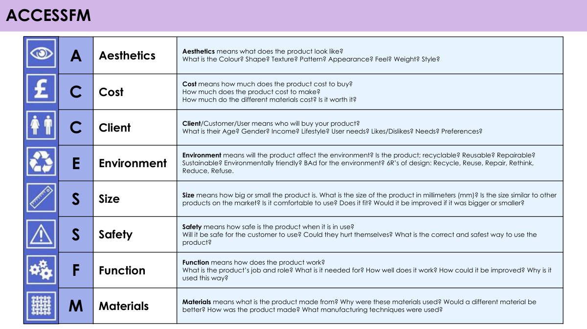
ACCESSFM은 제품을 분석하는 여덟 가지 기준의 머리글자다 — Aesthetics(미학), Cost(비용), Client(고객), Environment(환경), Size(크기), Safety(안전), Function(기능), Materials(재료).
각 기준마다 던져야 할 질문이 정해져 있다. 예를 들어 크기는 mm 단위로 답하고, 환경은 6R(Recycle, Reuse, Repair, Rethink, Reduce, Refuse)로 따진다.
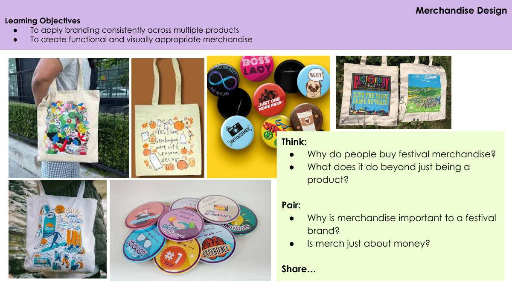
여러 제품에 같은 브랜딩을 일관되게 적용하는 것과, 쓸모 있으면서 보기에도 어울리게 만드는 것이 이 쪽의 두 가지 목표다.
굿즈를 돈벌이로만 보지 말고, 축제 브랜드에 어떤 의미가 있는지를 혼자 생각한 뒤 짝과 이야기하고 전체와 나누는 순서로 진행한다.
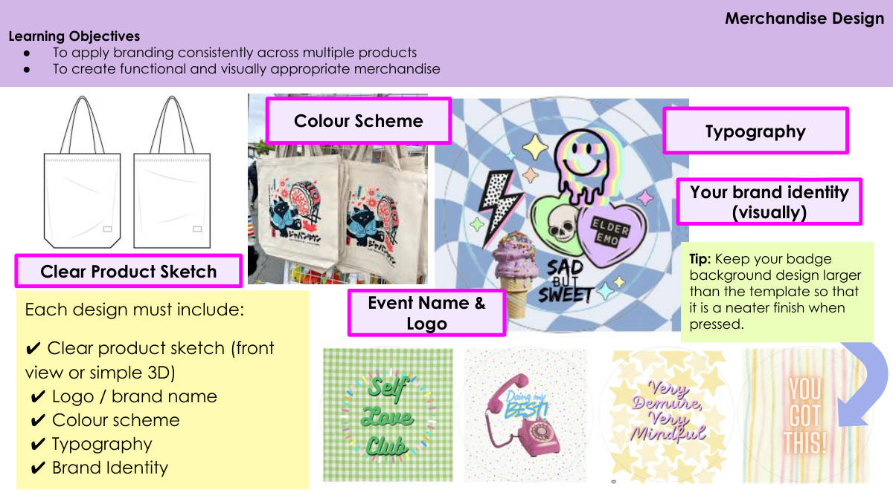
굿즈 디자인 하나하나에 제품 스케치·로고/브랜드 이름·색 구성·글꼴·브랜드 정체성 다섯 가지를 모두 넣어야 한다.
배지는 배경 디자인을 템플릿보다 크게 그려야 눌러 찍은 뒤 가장자리가 깔끔하게 나온다.
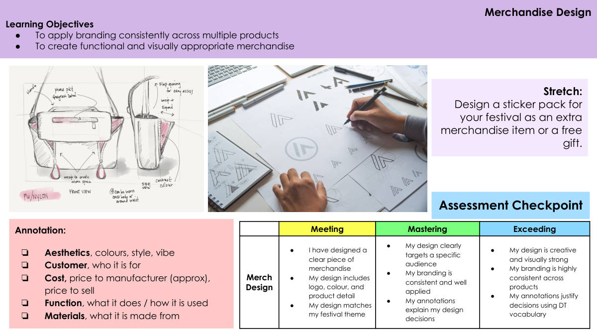
평가는 Meeting → Mastering → Exceeding 세 단계다. 로고·색·제품 세부사항을 넣고 축제 테마와 맞추면 Meeting, 대상 고객을 겨냥하고 브랜딩을 일관되게 하며 주석으로 결정을 설명하면 Mastering, 창의성과 DT 용어로 결정을 정당화하면 Exceeding이다.
주석에는 다섯 가지를 반드시 쓴다 — 미적 요소, 고객, 비용(제조 원가와 판매 가격), 기능, 재료다. 더 해볼 것으로 스티커 팩 디자인이 제시되어 있다.
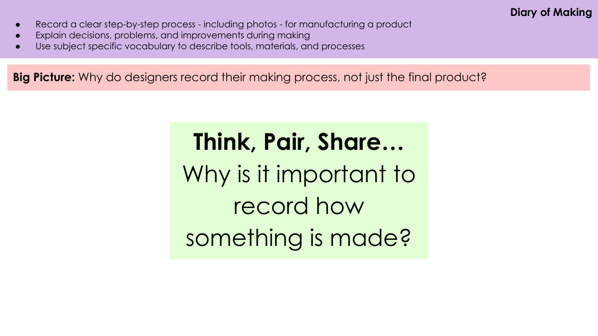
제작 일지에는 사진을 넣은 단계별 과정과 함께, 만들면서 내린 결정·생긴 문제·개선한 점까지 적어야 한다.
도구·재료·과정을 설명할 때는 과목에서 쓰는 전문 용어를 쓴다.
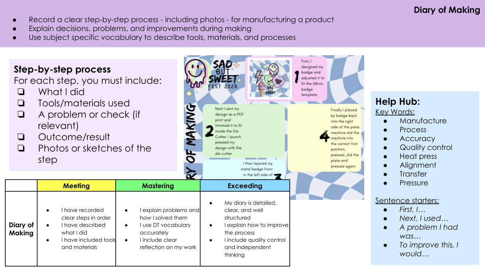
제작 일지는 단계 순서대로 쓰고, 각 단계에 한 일·도구와 재료·문제나 점검·결과·사진(스케치)까지 다섯 가지를 모두 넣어야 한다.
성적 단계가 올라가려면 기록에 더해 문제 해결 과정과 성찰, 나아가 공정 개선 방법과 품질 관리·독자적 사고까지 써야 한다.
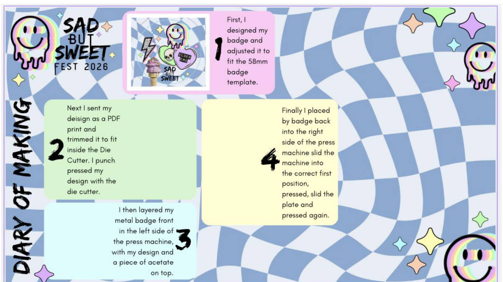
이 쪽에는 읽을 글자가 없으므로 앞뒤 쪽의 흐름을 이어서 보면 된다.
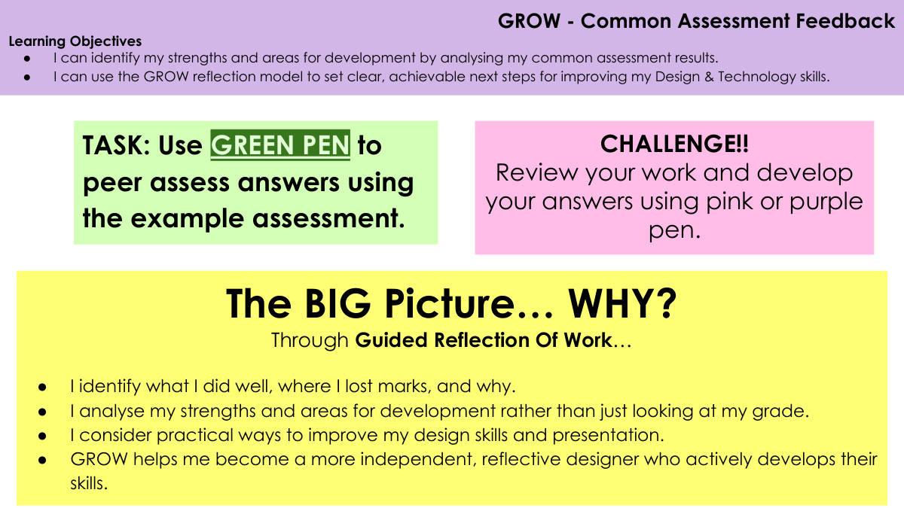
GROW는 성적 자체가 아니라 강점과 발전할 점을 분석해 다음 단계를 정하는 성찰 모델이다.
펜 색깔로 작업을 구분한다 — 초록색 펜은 친구 답안 평가, 분홍색·보라색 펜은 자기 답안 보완이다.
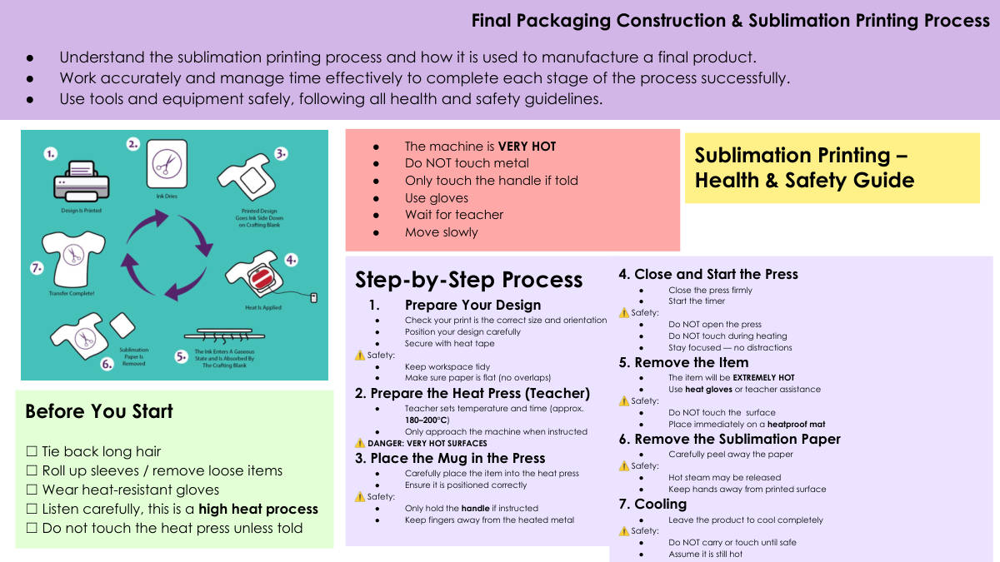
승화전사 인쇄는 약 180~200°C의 고열 작업이라, 시작 전에 머리를 묶고 소매를 걷고 내열 장갑을 끼며, 열 프레스는 선생님이 지시할 때만 만진다.
7단계 순서는 디자인 준비 → 프레스 준비(선생님) → 머그컵 넣기 → 닫고 시작 → 꺼내기 → 전사지 떼기 → 식히기이며, 꺼낸 물건은 극도로 뜨거워 내열 매트에 바로 놓고 완전히 식을 때까지 만지지 않는다.
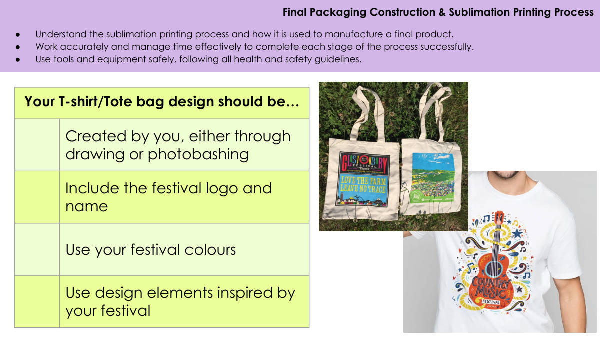
승화 인쇄로 최종 제품을 만드는 과정을 이해하고, 시간 관리와 안전 수칙을 지키며 각 단계를 끝내는 것이 이 쪽의 목표다.
티셔츠나 토트백 디자인은 직접 그리거나 포토배싱으로 만들고, 축제 로고·이름·색·디자인 요소를 반드시 넣어야 한다.
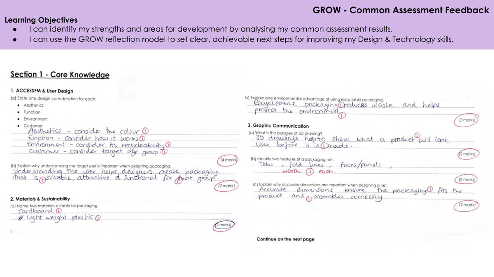
공통평가 결과를 분석해 강점과 보완할 점을 스스로 찾아내는 것이 이 쪽의 목표다.
GROW 성찰 모형은 다음에 무엇을 할지 분명하고 실천 가능한 단계로 정하는 데 쓴다.
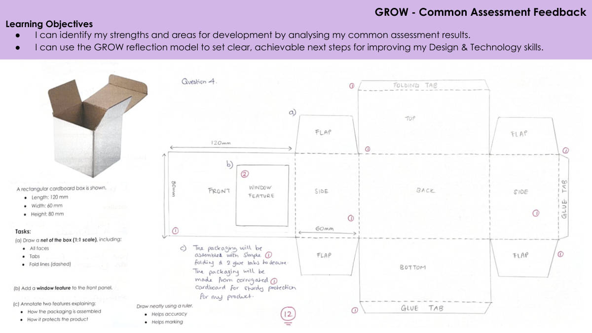
공동 평가 결과를 분석해 잘한 점과 부족한 점을 스스로 찾아내는 것이 이 쪽의 목표다.
GROW 성찰 모델로 디자인·기술 실력을 올릴 구체적인 다음 단계를 세운다.
A moodboard is a single page where images and words about the festival are collected and stuck together in one place. It shows the research decisions — what kind of festival it is, what events and performances there are, what will be sold, the colour scheme and who the customers are. Its purpose is to let anyone feel the whole atmosphere of the festival at a glance, so the designer has a clear direction before designing the poster, ticket and merchandise.
In this project I take the role of a graphic designer. I have been asked by a client to create promotional merchandise for a popular festival. The items I must produce include a poster, a badge, a logo, a T-shirt and a wristband, and the festival theme can be chosen from music, gaming, film, or food and drink.
The target audience is the type of customer who will actually come to the festival, and it is decided during the research and moodboard stage. Knowing the audience controls the other design decisions such as the colour scheme, the events and performances shown, and the merchandise that will be sold. If the audience is not identified, the poster, ticket and badge may not appeal to the people the festival is trying to attract.
The poster must include a logo that shows the theme, so the festival's identity and subject are recognised immediately. It must include the name of the festival so people know which event is being advertised. It must include information and pictures about what visitors can enjoy, so the audience knows what they are paying for. It must include how to get tickets, otherwise interested people cannot actually buy entry, and the poster must also be attractively decorated so it draws attention.
Instead of using a ready-made default Canva template as it is, I must design my own layout and decoration so the poster is original work. The poster should carry my own logo, festival name, colour scheme and typography so the design matches the theme decided on my moodboard. Using an unchanged template would mean the design is not really mine and would not show a consistent, original festival identity, which is what the assessment rewards.
The ticket must show clear, visible branding, including the festival name and logo. It must have a barcode or QR code, the price, and the ticket tier. It must also state the venue, and the date and time of the festival. All of these together make the ticket both usable at the gate and recognisable as part of the festival's brand.
A ticket tier is the level of ticket a customer buys, which makes clear what access or privileges that ticket gives them. Examples include General Admission and VIP, and tiers can also be based on length of access such as a 1-day pass or a 3-day pass. Showing the tier on the ticket means staff and customers both know exactly what the ticket allows.
Security features are included to stop tickets from being forged or copied. Examples given in the brief are holograms and watermarks, and the barcode or QR code also allows each ticket to be checked. Without them, fake tickets could be sold or used, which would cost the festival money and let in people who have not paid.
The merchandise design page must include a sketch of the product itself, so the shape and look of the badge are clear. It must also show the logo and the brand name of the festival. In addition it must show the colour scheme and the typography being used, so the badge clearly belongs to the same festival brand as the poster and ticket.
Page 1 is the title page with my name, class and teacher's name; page 2 is the moodboard; page 3 is the poster; page 4 is the ticket; and page 5 is the badge design. From the poster page onwards, ACCESSFM annotation must be added alongside the design to explain the design decisions. The work is graded as Foundation, Developing, Secure or Excellence, and higher levels are reached by completing every page and by keeping the theme consistent across all of them, so an Excellence outcome has all five pages finished with one clear theme running through the poster, ticket and merchandise.